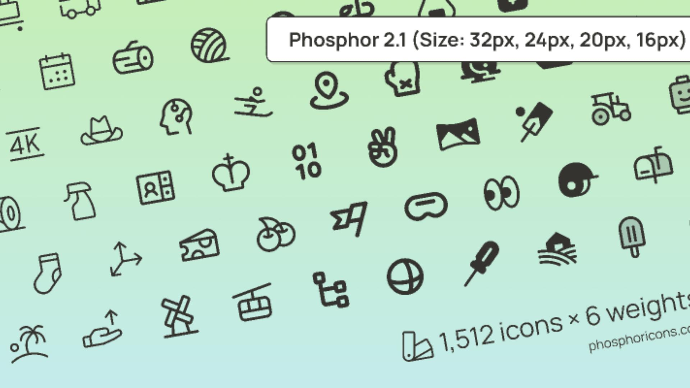
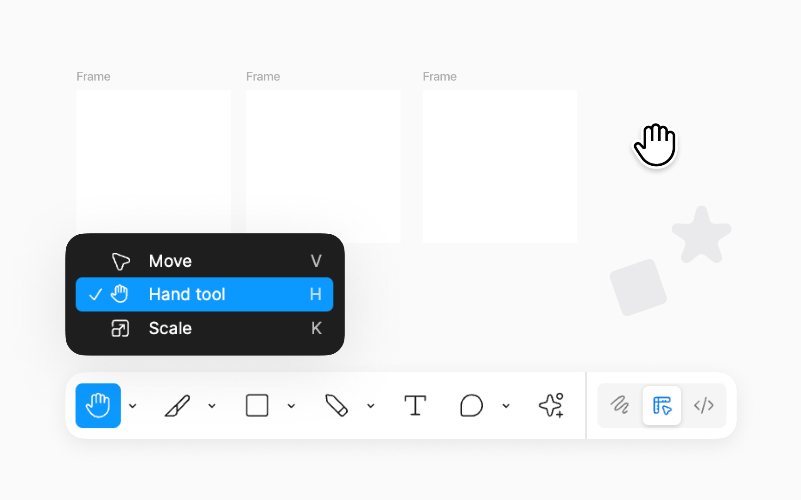

读法：九个案例分三组——图标库定族形基准、产品工具条定轨内形制与选中、地图句柄定角区边界。每条「决策」都落到本产品已盘出的具体图标与归属；可直接借鉴 形制可取、按令牌调整 仅作储备。
组一 · 图标库：定族形、收框与档位基准
库不直接决定我们用哪套，但决定「同一族内该怎么对齐」：网格、收框比例、线宽、档位成套。
01 · 图标库
Lucide

做法
- 24px 网格，约 1.8–2px 描边，round cap / join，造型克制统一。
- 方形与圆角几何混用但基线对齐；黑白 currentColor，不靠多档颜色区分状态。
- 同族图标收框比例一致，小尺寸下仍可辨认。
映射到我们
- 对应我们的域线性族：Plotcraft 77 枚家具/结构 + lucide-react 53 枚户外画布。
- 现有两套线性并存、描边宽不一（Plotcraft 1.5px ｜ lucide 1.8px），收框也不齐。
我们的决策
- 借鉴 域族统一到 24 视窗、1.5–1.6px 描边、round 转角；图形收框 78%–90%，同档同视觉重量。
- 借鉴 域图标只走 currentColor，状态靠底色/反白表达，不在图标本体上加颜色。
- 不照搬 我们通用 UI 仍是 Material 实心，不把控件也换成 Lucide 线性。
02 · 图标库
Tabler

做法
- 同一构形同时给 Line 与 Fill 两套重量，成对成套；24 网格 2px。
- 互为反义的状态（锁/解锁、开/合、左/右）共享同一骨架，只改关键笔画。
- 几何偏方正，直线与圆头比例克制。
映射到我们
- 我们的成对状态：lock / lock_open、view_compact / view_in_ar、undo / redo、zoom_in / zoom_out、grid_3x3 / grid_on。
- 目前 2D/3D、缩放 +/- 分属不同来源（Material 与 IconPark 镜片），骨架不统一。
我们的决策
- 借鉴 成对/反义图标同构骨架：同一外框与基准，只变区分笔画，让 2D/3D、锁/解锁一眼成对。
- 借鉴 控件默认实心、选中与禁用各取一套重量/灰阶，成对交付，不临时现画。
- 动作 缩放 +/- 收编回 Material zoom_in/out，与 undo/redo 同骨架；IconPark 镜片留作可选例外。
03 · 图标库
Phosphor

做法
- 按 16 / 20 / 24 / 32 四档成组交付，另给六档字重；每档构形一致、笔画随档微调。
- 连家具、食物、角色等领域图形也纳入同一套档位体系。
映射到我们
- 我们规范档位：行内 16 ｜ 控件 20 ｜ 面板 24 ｜ 空态 32；与 Phosphor 四档完全对齐。
- 现状问题：交付弹层行内档 14/15 混用；左轨 26 脱离档位；域图标多停在单档 24。
我们的决策
- 借鉴 全产品只认 16 / 20 / 24 / 32 四档；弹层行内统一收 16，不再出现 14/15。
- 借鉴 同一枚图标在不同档位下保持构形与收框一致，笔画随档微调，不重新设计。
- 二期 左轨 26 档评估降到 20/24；右轨 30 钮本轮不动，只换族不改版式。
组二 · 产品工具条：定轨内形制、选中表达与分组
控件在工具条上怎么排、选中怎么表达、同类工具怎么同槽，直接对照我们的右轨与 tool-select 弹层。
04 · 产品工具条
Figma · 白底圆角横条

做法
- 一条白底细圆角胶囊内，图标同族同档同描边宽；可展开钮带下挂 chevron。
- 选中态：蓝底圆角块 + 白色反白图标；未选中灰黑线性。选中只靠底色反白，图标不变色。
- 动作簇与辅助簇之间用发丝竖线分隔；低频/辅助钮落在右侧独立小簇。
映射到我们
- 对应右轨竖列：选择 / 2D3D / 测量 / 标注 / 属性 / 图层 / 漫游 / 网格 / 地图 / 卫星 / 撤销重做 / 缩放 / 导出 / 氛围。
- 我们现状：通用控件里混进了自绘抓手、四向、网格井字等第三套字形；选中靠绿边 + 绿字。
我们的决策
- 借鉴 右轨一轨内 只放 A 族 Material 实心；零散自绘逐枚归位（open_with / pan_tool / grid_3x3 / photo_camera）。
- 借鉴 选中表达统一：按钮底色承接 + 图标 currentColor 反白/绿字；静息态图标不变色，禁用统一一套灰阶。
- 借鉴 动作簇（选择/测量/标注/属性）与地图簇（地图/卫星/缩放）之间用发丝线或留白分组，不混成一列。
- 不照搬 Figma 是线性族；我们轨内保持实心，品牌蓝换品牌绿 #4A7C59 / #35624A。
05 · 产品工具条
Miro · 左竖轨双钮独立

做法
- 窄轨图标单列等距；选择箭头与抓手各自独立占格，不叠放同槽。
- 同族线性；当前项图标本身变品牌色，其余深墨。全轨不混第三套字形。
映射到我们
- 对应我们 tool-select：选择（near_me）与抓手（HandStopIcon）目前同槽菜单弹层切换。
- 这是「同槽合钮」与「双钮独立」两种取舍的直接对照。
我们的决策
- 借鉴 无论合钮还是双钮，两图标必须同族同档；抓手归 Material pan_tool 后与选择 near_me 同重量。
- 取舍 轨内空间紧张时维持同槽弹层（见案例 09）；空间允许可像 Miro 双钮独立占格，二者不混用。
- 不照搬 选中靠图标变蓝；我们选中仍以底色/绿字承接。
06 · 产品工具条
Affinity · 深轨实心一族

做法
- 深轨内以实心/填充图标为主，工具重量统一；选中深色底反白。
- 个别工具保留局部彩色（笔尖、铅笔），属工具身份标识，不扩散到全轨。
映射到我们
- 对照我们右轨的实心族重量：Material Rounded fill 与 Affinity 同属「实心一族」路线。
- 我们的品牌绿只两处（选中指示、发送键），工具身份不靠图标局部着色。
我们的决策
- 借鉴 实心一族的统一重量：右轨 30 钮内图标填充度、收框、圆角一致，不出现一枚实心一枚描边。
- 储备 Affinity 整套深色轨仅作深色模式储备；现行浅色工作台不搬深色底。
- 守住 不在工具图标上做局部彩色；品牌绿只用于选中与发送。
组三 · 地图句柄：定角区边界与例外语义
地图类控件不与编辑器工具列混排；罗盘、缩放、底图各成角区，指针色属领域语义例外。
07 · 地图句柄
Google Maps 桌面 · 右竖列控件

做法
- 罗盘、2D、定位、缩放 +/- 沿右缘竖排成簇，深色圆钮；缩放上下叠放成一组。
- 底图缩略图另起底部横条；罗盘指北针保留红白双色，属地图领域语义，不跟控件同色板。
映射到我们
- 对应我们右下罗盘卡、底图横条、缩放 +/-、地图/卫星钮；现状缩放还混在右轨工具列里。
- 我们罗盘已是蓝灰双针自绘例外；底图字符钮散在地图簇。
我们的决策
- 借鉴 缩放、罗盘、底图归到右下地图角区自成白卡，不与右轨编辑器工具混排；缩放 +/- 上下叠放成一组。
- 借鉴 地图/卫星 map / satellite 与底图钮同簇同族；句柄内小钮归 A 族。
- 例外 罗盘双针属地理指北语义，保留自绘并登记为例外，不强制翻成 Material 实心。
08 · 地图句柄
Mapbox 导航 · 右竖列成组

做法
- 消息、设置、分享、麦克风沿右竖列圆钮成组；主操作反白，其余同色线性。
- 转向箭头、搜索、天气、取消各成独立黑卡，按功能分簇，不挤在同一列。
映射到我们
- 对应我们右上交付钮、氛围/天气组（sunny / rainy / light_mode / wb_sunny）、导出/图库。
- 现状交付入口与轨内上传箭头重复；氛围图标成组但未明确簇边界。
我们的决策
- 借鉴 交付独立一枚主钮收进弹层；天气/光线自成一簇卡片，不与工具钮同列。
- 借鉴 簇内主操作（发送/交付）反白承接，其余 currentColor 墨色；禁用统一灰阶。
- 储备 Mapbox 深色整套仅作深色模式参照；现行浅色用白卡 + 发丝边。
09 · 同槽弹层
Figma · 同槽弹出菜单

做法
- 同类工具一槽叠放；弹层每行 图标 + 名称 + 快捷键 + 选中勾，信息对齐。
- 选中行蓝底白字白勾；槽位前景显示当前工具，右下小 chevron 提示可展开。
- 弹层内图标仍属同一族，不另造一套字形。
映射到我们
- 对应我们 tool-select 弹层：选择 / 抓手（后续可扩缩放）；行内已有 Check 勾，缺名称与快捷键列的规整对齐。
我们的决策
- 借鉴 弹层行内固定四列：族图标 ｜ 名称 ｜ 快捷键（若有）｜ 选中勾；行距与留白统一。
- 借鉴 当前工具前景显示在槽位；展开指示用小 chevron，弹层内图标随 A 族实心。
- 不照搬 弹层深底仅在深色模式启用；现行浅色用白卡 + 发丝边，选中绿底绿字。
汇总：案例 → 落到我们的动作
按案例顺序回溯，每条对应大盘清单里的具体图标。
| 案例 | 借鉴要点 | 对应我们的图标 / 场景 | 动作 |
|---|
| 01 Lucide | 24 网格、收框 78–90%、currentColor | Plotcraft 77 + lucide 53 域线性族 | 两套线性收编一套，描边 1.5–1.6px、round 转角 |
| 02 Tabler | 反义状态同构骨架、双重量成套 | lock/unlock、2D/3D、undo/redo、zoom +/- | 成对图标同骨架；缩放收编回 Material zoom_in/out |
| 03 Phosphor | 16/20/24/32 四档成套交付 | 弹层行内、右轨控件、面板、空态 | 行内统一 16；消除 14/15 与脱离档位的 26 |
| 04 Figma 横条 | 一族到底、选中反白、发丝分组 | 右轨整列工具 | 轨内只放 A 族；零散自绘归位；动作簇与地图簇分开 |
| 05 Miro | 双钮独立占格、同族不混字形 | 选择 near_me ｜ 抓手 pan_tool | 两图标同族同重量；合钮/双钮二选一不混用 |
| 06 Affinity | 实心一族、重量统一、局部彩色不外扩 | 右轨实心族重量对照 | 填充度/收框/圆角一致；品牌绿只两处 |
| 07 Google Maps | 角区成簇、缩放竖排、罗盘例外 | 右下罗盘、底图横条、缩放、地图/卫星 | 地图句柄归角区白卡；罗盘双针登记例外 |
| 08 Mapbox | 功能分簇、独立卡片、主操作反白 | 右上交付、氛围天气组、导出图库 | 交付单入口；天气自成一簇；主操作反白 |
| 09 Figma 弹层 | 行内 图标+名+快捷键+勾、前景当前 | tool-select 弹层 | 四列对齐；弹层图标随 A 族；小 chevron 展开 |
待拍板仍沿大盘：线性族收编以 Plotcraft 还是 lucide 为主；pan_tool / open_with 补 Material 资产还是留自绘例外；左轨 26 档是否二期下调。代码本轮未改。